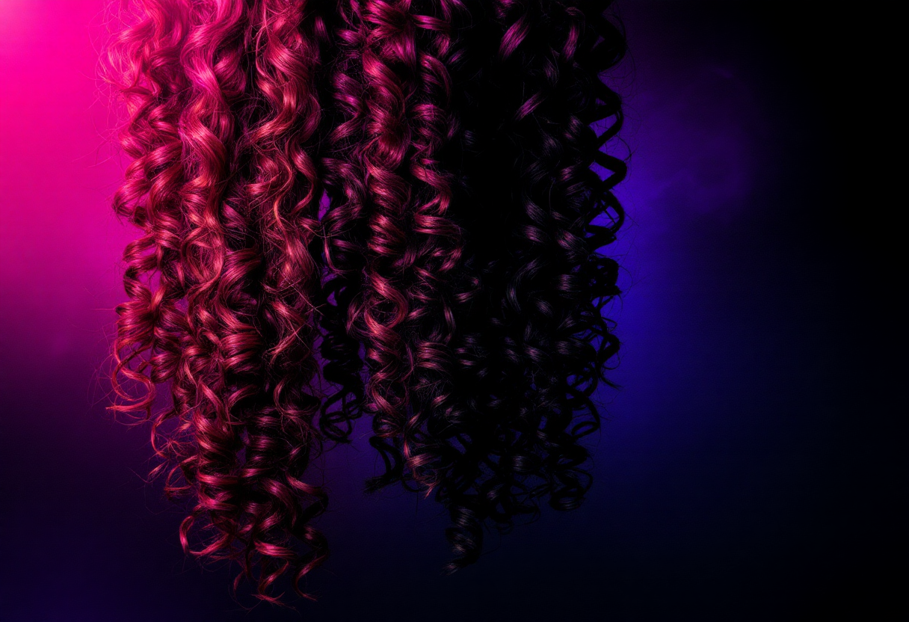
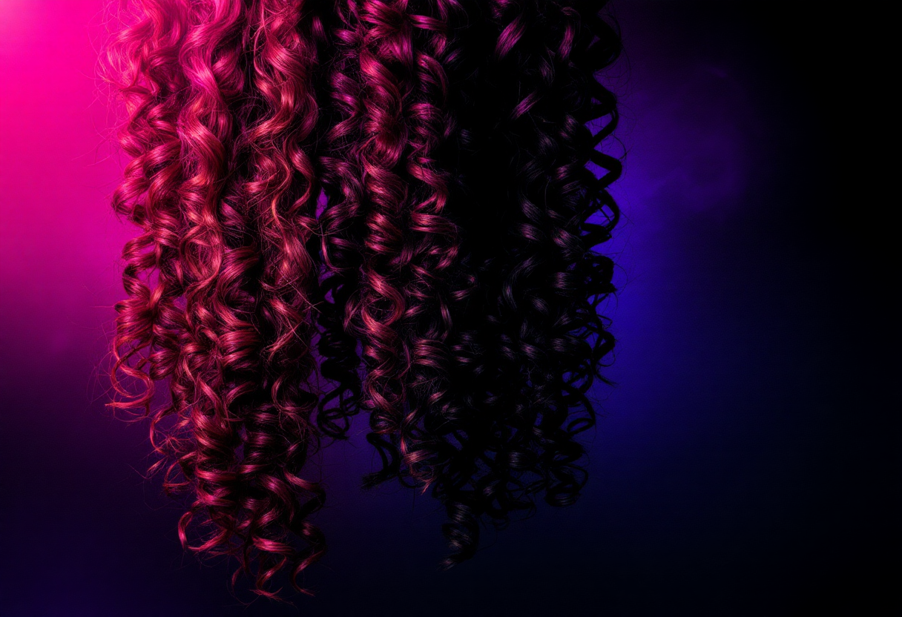

Produtos: Linha de Cabelos Crespos e Cacheados
Descubra nossa vasta coleção de apliques e perucas de fibra orgânica, projetados para replicar a beleza natural dos cabelos crespos e cacheados. Cada peça oferece textura autêntica, toque macio e uma aparência incrivelmente realista. Uma variedade de black, caracol e afro puff, temos a opção perfeita para você.

 


Nossos produtos são conhecidos pela alta durabilidade e qualidade. Com preços a partir de R$49,90, oferecemos opções de parcelamento em até 6x para facilitar sua compra. Encontre a textura e o volume ideais para transformar seu visual com confiança.
Cuidados e Tratamentos Específicos para Seus Fios
Para garantir a longevidade e a beleza de seus cabelos orgânicos e naturais, oferecemos uma linha completa de kits de tratamento.
De shampoos nutritivos a cremes desembaraçantes, cada produto é formulado para proporcionar hidratação profunda,
nutrição essencial e definição perfeita dos seus cachos.
Trabalhamos com marcas renomadas como Afro Essence, Solos de Mel e Crespos D'África, garantindo a você a melhor qualidade e resultados visíveis. Siga nossas recomendações de manutenção para manter seus fios sempre saudáveis e deslumbrantes.

Hidratação
Para maciez e brilho intenso.
Nutrição
Restaura a vitalidade e a força.
Definição
Cachos perfeitos e duradouros.
Manutenção
Cuidados diários para fios saudáveis.